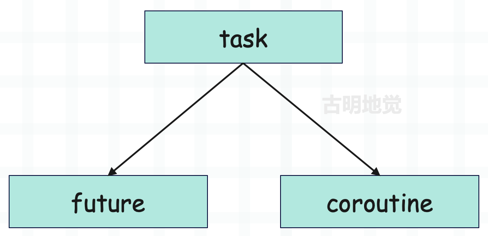
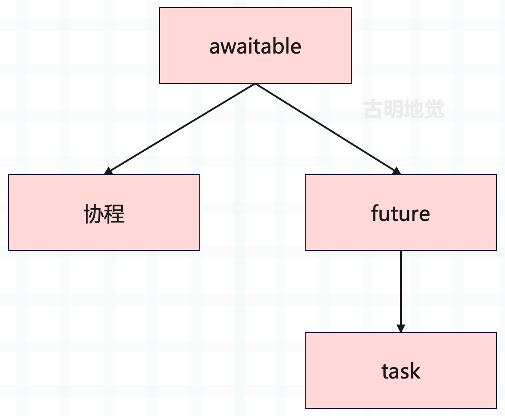

楔子
关于 Future 和 Task 在之前的文章中已经说过了，但由于这两个概念非常重要，我们单独再说一遍，并做一些补充。虽然内容和之前会有很多重复，但不妨碍我们再复习一遍。
Future
Future 是 asyncio 提供的一个类，它的实例对象（future）我们称之为未来对象，future 包含一个你希望在未来某个时间点获得、但目前还不存在的值。通常当创建 future 时，它内部还没有任何值，在这种状态下，future 被认为是不完整的、未解决的或没有完成的。然后一旦得到结果，就可以设置 future 的值，这将完成 future。那时我们可以认为 future 已经完成，并可从中提取结果。
让我们尝试创建一个 future，然后设置它的值并提取该值。
import asyncio
# asyncio 里面有一个类 Future
# 实例化之后即可得到未来对象 future
future = asyncio.Future()
print(future)
"""
<Future pending>
"""
print(future.__class__)
"""
<class '_asyncio.Future'>
"""
# 注意这里是 _asyncio.Future，不是 asyncio.Future
# 因为解释器自带了一个 C 实现的 _asyncio，编译之后就内嵌在解释器里面了
# 它提供了 asyncio 需要的核心功能，比如这里的 Future
# 当然 asyncio 本身也实现了 Future，只不过运行时会使用 C 实现的
由于 future 内部还没有结果，所以打印的时候显示 pending 状态。
import asyncio
future = asyncio.Future()
print("future 是否完成:", future.done())
"""
future 是否完成: False
"""
# 调用 set_result 设置结果
future.set_result("古明地觉")
print("future 是否完成:", future.done())
"""
future 是否完成: True
"""
print(future)
"""
<Future finished result='古明地觉'>
"""
print("future 的返回值:", future.result())
"""
future 的返回值: 古明地觉
"""
future 有一个 done 方法，调用之后会返回布尔值，标记此 future 是否已经运行完成。运行完成返回 True，否则返回 False。
而当调用 future.set_result() 之后，就代表它运行完成了，该方法会给 future 设置一个结果。因为它的含义是未来对象，包含一个从未来某个时刻才存在的值，当它内部还没有这个值的时候，就代表它还处于未完成（pending）状态，一旦有值了，那么就会变成已完成（finished）状态。
而当状态变成已完成时，便可以调用 result 方法拿到相应的结果。
import asyncio
from asyncio import Future
async def set_result(future: Future, result):
await asyncio.sleep(3) # sleep 3 秒
future.set_result(result)
async def get_result(future: Future):
while future.done() is False:
print("future 处于未完成状态，sleep 1 秒")
await asyncio.sleep(1)
else:
print("future 状态变为已完成")
print("future 内部的值为:", future.result())
async def main():
future = Future()
# 并发运行两个协程
await asyncio.gather(
set_result(future, "Some Value"),
get_result(future)
)
asyncio.run(main())
"""
future 处于未完成状态，sleep 1 秒
future 处于未完成状态，sleep 1 秒
future 处于未完成状态，sleep 1 秒
future 状态变为已完成
future 内部的值为: Some Value
"""
future 的概念应该还是很好理解的，你就把它想象成一个容器，容器里面就是你所需要的值，只不过目前还没有。一旦有了，就会通过 set_result() 方法放到容器里，然后再通过 result() 方法拿到它。
但是注意：我们只能调用一次 set_result，但是 result 可以多次调用。
from asyncio import Future
from asyncio import InvalidStateError
future = Future()
future.set_result("古明地觉")
# 可以获取任意多次
print(future.result()) # 古明地觉
print(future.result()) # 古明地觉
print(future.result()) # 古明地觉
# 但是 set_result 只能调用一次
# 否则报错，会提示我们 future 的状态无效
try:
future.set_result("古明地觉")
except InvalidStateError as e:
print(e) # invalid state
future 对象除了有 set_result 方法之外，还有一个 set_exception 方法。因为在未来的某个时刻，我们本应该把结果值设置给 future，但由于某些原因执行出错了，我们并没有拿到结果值，那么这时候就应该将异常设置给 future。
首先 set_result 方法是可以接收异常的，因为异常本身也是一个对象，也可以作为一个结果。但为了区分，我们会使用 set_exception，因为如果还使用 set_result 方法的话，那么我们就无法判断这个异常是因为报错产生的，还是某个函数本身就返回了异常。
注：set_exception 方法必须接收一个异常对象。
from asyncio import Future
future = Future()
# 注意：不管是调用 set_result 还是 set_exception
# 都会将 future 的状态标记为已完成（finished）
future.set_exception(ValueError("o_O"))
print(future.done())
"""
True
"""
# 调用 exception() 方法会拿到相应的异常
print(future.exception())
"""
o_O
"""
那么问题来了，当 future 的状态为已完成时，我们怎么知道它接收的是正常的结果值，还是异常呢？很简单：
- 调用 future.set_result() 之后：
- 调用 future.result() 会返回设置的结果；
- 调用 future.exception() 会返回 None；
- 调用 future.set_exception() 之后：
- 调用 future.exception() 会返回设置的异常；
- 调用 future.result() 会将异常抛出来；
from asyncio import Future
future1 = Future()
future2 = Future()
print(future1.done())
print(future2.done())
"""
False
False
"""
# 不管是 set_result 还是 set_exception，都表示 future 已完成
future1.set_result("Some Value")
future2.set_exception(ValueError("Some Error"))
print(future1.done())
print(future2.done())
"""
True
True
"""
# 如果 future 内部是正常的结果值
# 那么调用 result 返回结果，调用 exception 返回 None
print(future1.result())
print(future1.exception())
"""
Some Value
None
"""
# 但如果 future 内部是异常，调用 exception 会返回异常
print(future2.exception())
"""
Some Error
"""
# 调用 result 会将异常抛出来
future2.result()
"""
Traceback (most recent call last):
File "...", line 36, in <module>
future2.result()
ValueError: Some Error
"""
所以当你不确定 future 内部是否是正常的结果值，那么可以先调用 exception 方法，如果它返回的是 None，那么再调用 result。
然后 future 还可以绑定回调，当它处于已完成状态时，会触发回调的执行。
from asyncio import Future
def callback(future: Future):
if (exc := future.exception()) is not None:
print("出现异常:", exc)
else:
print("future 的结果值:", future.result())
async def main():
future1 = Future()
future2 = Future()
# 调用回调时，会自动将 future 本身作为参数传递过去
future1.add_done_callback(callback)
future2.add_done_callback(callback)
# 状态为 finished 时，会触发回调的执行
future1.set_result("Some Value")
future2.set_exception(RuntimeError("Some Value"))
asyncio.run(main())
"""
future 的结果值: Some Value
出现异常: Some Value
"""
另外 future 也可以用在 await 表达式中，如果对一个 future 执行 await 操作，那么会处于阻塞，直到该 future 有一个可供使用的值。
import asyncio
from asyncio import Future
def set_result(future: Future):
future.set_result("古明地觉")
async def main():
future = Future()
loop = asyncio.get_running_loop()
# 3 秒后调用 set_result
loop.call_later(3, set_result, future)
print("我会阻塞在这里，直到 3 秒后 set_value 调用完毕")
# 当 future.set_result() 的时候解除阻塞
result = await future
print("拿到结果:", result)
asyncio.run(main())
"""
我会阻塞在这里，直到 3 秒后 set_value 调用完毕
拿到结果: 古明地觉
"""
所以 await future 会阻塞等待，当 future 状态为已完成时，自动调用 future.result() 方法，将结果值返回。
你可以简单理解为我们发出了一个请求，由于请求需要一些时间，所以 future 还处于 pending 状态。当请求完成时，结果将被设置，那么 future 会变成 finished 状态，我们就可以访问它了，这个概念类似于 JavaScript 中的 Promise。而在 Java 中，这些被称为 completable future。
另外我们还可以取消一个 future，通过调用它的 cancel 方法。
from asyncio import Future
future = Future()
print("是否被取消:", future.cancelled())
"""
是否被取消: False
"""
future.cancel()
print("是否被取消:", future.cancelled())
"""
是否被取消: True
"""
# 一旦被取消，就不再调用 set_result 和 set_exception 了
在 asyncio 中，你很少会直接创建 Future 对象，但 asyncio API 的实现在很大程度上依赖于它，比如锁、事件等等，都依赖 Future，所以我们必须要理解它。
源码解密 Future
前面说了，Future 这个类是 C 实现的，但在 asyncio.futures 中也有着相应的纯 Python 实现，两者功能是一样的。下面我们就通过 Python 源码，看一下 Future 的实现过程（代码略有删减）。
首先 Future 实例有三个非常重要的属性：_state、_result、_exception，含义如下。
- _state 表示运行状态，总共三种，分别是：PENDING（正在运行）、CANCELLED（已取消）、FINISHED（已完成）。
- _result：调用 future.set_result() 时，本质上就是将结果值设置给了该属性。
- _exception：调用 future.set_exception() 时，本质上就是将异常设置给了该属性。
下面来看一下源码：
class Future:
def cancel(self):
# cancel 方法，负责取消一个 future
# 并且该方法有返回值，取消成功返回 True，取消失败返回 False
self.__log_traceback = False
# 检测状态是否为 PENDING，不是 PENDING，说明 future 已经运行完毕或取消了
# 那么返回 False 表示取消失败，但对于 future 而言则无影响
if self._state != _PENDING:
return False
# 如果状态是 PENDING，那么将其改为 CANCELLED
self._state = _CANCELLED
self.__schedule_callbacks()
return True
def cancelled(self):
# 判断 future 是否被取消，那么检测它的状态是否为 CANCELLED 即可
return self._state == _CANCELLED
def done(self):
# 判断 future 是否已经完成，那么检测它的状态是否不是 PENDING 即可
# 注意：CANCELLED 和 FINISHED 都表示 future 运行结束
return self._state != _PENDING
def result(self):
# 调用 result 方法相当于获取 future 设置的结果
# 但如果它的状态为 CANCELLED，表示取消了，那么抛出 CancelledError
if self._state == _CANCELLED:
raise exceptions.CancelledError
# 如果状态不是 FINISHED（说明还没有设置结果）
# 那么抛出 asyncio.InvalidStateError 异常
# 所以我们不能在 set_result 之前调用 result
if self._state != _FINISHED:
raise exceptions.InvalidStateError('Result is not ready.')
self.__log_traceback = False
# 走到这里说明状态为 FINISHED
# 但不管是正常执行、还是出现异常，都会将状态标记为 FINISHED
# 如果是出现异常，那么调用 result 会将异常抛出来
if self._exception is not None:
raise self._exception
# 否则返回设置的结果
return self._result
def exception(self):
# 无论是 set_result，还是 set_exception，future 的状态都是已完成
# 如果是前者，那么 self._result 就是结果，self._exception 为 None
# 如果是后者，那么 self._result 为 None，self._exception 就是异常本身
# 因此调用 result 和 exception 都要求 future 的状态为 FINISHED
# 如果为 CANCELLED，那么同样抛出 CancelledError
if self._state == _CANCELLED:
raise exceptions.CancelledError
# 如果为 PENDING，那么抛出 asyncio.InvalidStateError 异常
if self._state != _FINISHED:
raise exceptions.InvalidStateError('Exception is not set.')
self.__log_traceback = False
# 返回异常本身
# 因此如果你不确定 future 内部到底是普通的结果值，还是异常
# 那么可以先调用 future.exception()，看它是否为 None
# 如果 future.exception() 不为 None，那么拿到的就是异常
return self._exception
def set_result(self, result):
# 通过 set_result 设置结果
# 显然在设置结果的时候，future 的状态应该为 PENDING
if self._state != _PENDING:
raise exceptions.InvalidStateError(f'{self._state}: {self!r}')
# 然后设置 self._result，当程序调用 future.result() 时会返回 self._result
self._result = result
# 并将状态标记为 FINISHED，表示一个任务从 PENDING 变成了 FINISHED
# 所以我们不能对一个已完成的 future 再次调用 set_result
# 因为第二次调用 set_result 的时候，状态已经不是 PENDING 了
self._state = _FINISHED
self.__schedule_callbacks()
def set_exception(self, exception):
# 和 set_result 类似，都表示任务从 PENDING 变成 FINISHED
if self._state != _PENDING:
raise exceptions.InvalidStateError(f'{self._state}: {self!r}')
# 但 exception 必须是异常，且不能是 StopIteration 异常
if isinstance(exception, type):
exception = exception()
if type(exception) is StopIteration:
raise TypeError("StopIteration interacts badly with generators "
"and cannot be raised into a Future")
# 将 self._exception 设置为 exception
# 调用 future.exception() 的时候，会返回 self._exception
self._exception = exception
# 将状态标记为已完成
self._state = _FINISHED
self.__schedule_callbacks()
self.__log_traceback = True
整个过程应该很好理解，我们通过一段代码再演示一下：
import asyncio
future = asyncio.Future()
# future 是否已完成
print(future.done())
"""
False
"""
print(future._state)
"""
PENDING
"""
# 获取结果
try:
future.result()
except asyncio.InvalidStateError:
print("future 尚未完成，不能获取结果")
"""
future 尚未完成，不能获取结果
"""
# 但是我们可以通过 future._result 去获取（不推荐）
# 显然拿到的是 None
print(future._result)
"""
None
"""
print(future._exception)
"""
None
"""
future.set_result("我是返回值")
print(future.done())
"""
True
"""
print(future._state)
"""
FINISHED
"""
print(future.result() == future._result == "我是返回值")
"""
True
"""
非常简单，但是我们在设置结果或设置异常的时候，应该通过 set_result() 和 set_exception()，不要通过类似 future._result = "..." 的方式。同理获取返回值或异常时，也要用 future.result() 和 future.exception()，不要直接用 future._result 或 future._exception，因为这背后还涉及状态的维护。
当然 future 也可以用在 await 表达式中，如果对一个 future 执行 await 操作，那么会处于阻塞，直到 future 有一个可供使用的值。
Task
在 asyncio 中，如果协程想要并发运行，那么它必须被包装为 Task 对象，也就是任务。那么任务 task 和未来对象 future 之间有什么关系呢？首先在源码中，Task 是 Future 的子类，而一个任务可以看做是一个 future 和一个协程的组合。

future 可以被认为代表了我们暂时不会拥有的值，而一个任务可以被认为是一个协程和一个 future 的组合。创建一个任务时，我们正在创建一个空的 future，并运行协程。然后当协程运行得到结果或出现异常时，我们将其设置给 future。当然任务也可以使用 await 表达式，await 一个任务时同样会陷入阻塞，那么什么时候解除阻塞呢？显然是当协程执行完毕并将返回值设置在 future 里面的时候。
如果 await future，那么需要我们手动调用 future.set_result()。如果 await 任务，那么当协程执行完毕时会自动调用 future.set_result（执行出错则自动调用 future.set_exception），因为任务是基于协程包装得到的，它等价于一个协程加上一个 future。
但不管 await 后面跟的是任务还是 future，本质上都是等到 future 里面有值之后，通过 future.result() 拿到里面的值。
import asyncio
async def coro():
return "Some Value"
async def main():
# 将协程包装成任务，并且还可以起个名字
# 需要注意的是，当协程被包装成任务的时候，就已经开始运行了
task = asyncio.create_task(coro(), name="任务 1")
print(task)
print(task.__class__)
# 如果你希望拿到返回值，程序才能继续执行，那么使用 await 阻塞等待
result = await task
print("返回值:", result)
asyncio.run(main())
"""
<Task pending name='任务 1' coro=<coro() running at ...>>
<class '_asyncio.Task'>
返回值: Some Value
"""
问题来了，当 await 任务的时候，如果协程执行出错了，那么会怎么样呢？首先出错了，那么任务里面的 future 会调用 set_exception 设置异常。而前面在看 future 源码的时候，我们知道：如果没有出现异常，那么调用 result 返回结果，调用 exception 会返回 None；如果出现异常，那么调用 exception 会返回异常，调用 result 会将异常抛出来。
而 await 任务，本质上就是在调用内部 future 的 result 方法，显然如果任务内部的协程执行出错，那么会将出错时产生的异常抛出来。
import asyncio
async def coro():
raise Exception("出错了")
async def main():
task = asyncio.create_task(coro())
# Task 继承 Future，那么 await task 和 await future 的表现是一致的
# 协程在执行完毕时会调用 task.set_result() 设置结果值
# 如果协程执行出错，会调用 task.set_exception() 设置异常
# 而 await task 等价于 "阻塞等待 + task.result()"
try:
result = await task
print("返回值:", result)
except Exception:
exc = task.exception()
print("出现异常:", exc)
asyncio.run(main())
"""
出现异常: 出错了
"""
相信你现在已经了解任务是怎么回事了，它是协程对象的容器，并且也是一个 future，因为 Task 继承 Future。
不同的是，future 需要我们手动设置结果或异常，而任务不需要，内部的协程在运行完毕或出现异常时会自动设置。我们前面之所以花费很大笔墨介绍 Future，就是为了给任务做铺垫，因为我们实际在编写代码时，也是直接和任务打交道，而不是 future。
基于任务实现并发
使用 async def 可以定义一个协程函数，调用协程函数会得到一个协程对象。
async def coro():
return "Some Value"
# 如何判断它是不是一个协程函数呢？
if coro.__code__.co_flags & 0x80:
print("协程函数")
else:
print("非协程函数")
# 无论是协程函数还是普通函数，它们都是函数
# 通过 type 查看类型得到的都是 <class 'function'>
# 因此我们需要 co_flags 进行判断，解释器在编译时会设置不同的标识
# 同理如果 co_flags & 0x20 如果为真，那么就是生成器函数
# 调用协程函数，会得到协程对象
c = coro()
print(c.__class__)
"""
协程函数
<class 'coroutine'>
sys:1: RuntimeWarning: coroutine 'coro' was never awaited
"""
然后我们看到它抛出了一个警告，意思是协程没有被 await。因为协程没有办法直接运行，需要扔到事件循环中运行。或者在一个协程里面通过 await 关键字进行驱动（在 A 协程里面 await B 协程，如果 A 协程运行了，那么 B 协程也会被驱动）。
虽然通过这些工具，可编写异步代码，但不能同时运行，要想同时运行协程，需要将它包装成任务。上面说了，任务是协程的包装器，它安排协程尽快在事件循环上运行，并提供一系列的方法来获取协程的运行状态和返回值。这种调度和执行以非阻塞方式发生，这意味着一旦创建一个任务，那么任务就会立刻运行。
import asyncio
async def get_html(n):
# 模拟从网站下载页面
await asyncio.sleep(n)
return f"{n} 秒后，页面被下载"
async def main():
# 通过 asyncio.create_task 函数创建任务
# 调用时需要给它传递一个协程，然后返回一个任务对象
task1 = asyncio.create_task(get_html(3))
task2 = asyncio.create_task(get_html(2))
# 此时 task1 和 task2 均已开始运行
print("task1 是否运行完毕", task1.done())
print("task2 是否运行完毕", task2.done())
# sleep 2.5 秒
await asyncio.sleep(2.5)
print("sleep 2.5 秒后")
print("task1 是否运行完毕", task1.done())
print("task2 是否运行完毕", task2.done())
asyncio.run(main())
"""
task1 是否运行完毕 False
task2 是否运行完毕 False
sleep 2.5 秒后
task1 是否运行完毕 False
task2 是否运行完毕 True
"""
从打印的结果不难看出，协程被包装成任务之后就已经开始运行了，并且两个任务是并发运行的。需要注意的是，由于 task1 的睡眠时间稍长一些，所以在它还没有运行完毕之前，主协程就已经结束了。
import asyncio
async def get_html(n):
print("开始下载页面")
await asyncio.sleep(n)
print(f"{n} 秒后，页面被下载")
async def main():
task1 = asyncio.create_task(get_html(3))
task2 = asyncio.create_task(get_html(2))
await asyncio.sleep(2.5)
asyncio.run(main())
"""
开始下载页面
开始下载页面
2 秒后，页面被下载
"""
从结果可以看出，只有 task2 完成了，而 task1 还没运行完，主协程就结束了。如果我希望等待所有任务都完成呢？那么可以使用 await。
import asyncio
async def get_html(n):
await asyncio.sleep(n)
print(f"get_html({n})")
return f"{n} 秒后，页面被下载"
async def main():
task1 = asyncio.create_task(get_html(3))
task2 = asyncio.create_task(get_html(2))
result1 = await task1
result2 = await task2
print(result1)
print(result2)
asyncio.run(main())
"""
get_html(2)
get_html(3)
3 秒后，页面被下载
2 秒后，页面被下载
"""
不难看出，get_html(2) 要先运行完毕，但我们先 await task1，所以在这个过程中，task2 已经运行完毕了。只不过代码是串行执行的，必须等待 await task1 结束之后才能 await task2。但 task2 先 task1 结束，所以 await task1 之后，await task2 会立即得到结果。
但如果先 await task2，那么 await task1 的时候则需要再等待 1 秒，才能拿到结果，非常好理解。当然不管是哪一种方式，两个任务运行结束所花费的总时间都是 3 秒，但如果我们直接运行协程就不一样了。
import time
import asyncio
async def get_html(n):
await asyncio.sleep(n)
print(f"get_html({n})")
return f"{n} 秒后，页面被下载"
async def main():
# 得到两个协程对象
c1 = get_html(3)
c2 = get_html(2)
# 协程如果想运行，需要扔到事件循环中进行调度
# 而包装成任务的时候，会被扔到事件循环中
# 或者在协程内部通过 await 进行驱动
result1 = await c1
result2 = await c2
print(result1)
print(result2)
start = time.perf_counter()
asyncio.run(main())
print("总耗时:", time.perf_counter() - start)
"""
get_html(3)
get_html(2)
3 秒后，页面被下载
2 秒后，页面被下载
总耗时: 5.0024129
"""
我们发现总耗时需要 5 秒，因为不管 await 后面跟的是 future、任务还是协程，都会产生阻塞。但很明显 await c1 的时候 c2 并没有开始运行，它必须在 await c1 之后才会进入事件循环，所以它们是串行的。
因此我们不要直接 await 一个协程，而是将它包装成任务，一旦包装成任务后，就自动进入事件循环开始运行了。如果你希望程序必须等到某个任务完成之后才能继续，那么再 await 它即可。
取消任务
网络连接可能不可靠，用户的连接可能因为网速变慢而中断，或者网络服务器崩溃导致现有的请求无法处理。因此对于用户发出的请求，需要特别小心，不要无限期地等待。如果无限期等待一个不会出现的结果，可能导致应用程序挂起，从而导致精糕的用户体验。
在之前的示例中，如果任务一直持续下去，我们将被困在等待 await 语句完成而没有反馈的情况，也没有办法阻止这样的事情发生。因此 asyncio 提供了一个机制，允许我们手动取消任务，或者超时之后自动取消。
取消任务很简单，每个任务对象都有一个名为 cancel 的方法，可以在想要停止任务时调用它。取消一个任务将导致该任务被 await 时引发 CancelledError，然后再根据需要处理它。
为说明这一点，我们启动一个长时间运行的任务，但我们不希望它运行的时间超过 5 秒。如果任务没有在 5 秒内完成，就停止该任务。
import asyncio
async def get_html(seconds):
print("开始下载页面")
await asyncio.sleep(seconds)
return f"{seconds} 秒后下载完成"
async def main():
long_task = asyncio.create_task(get_html(10))
seconds_elapsed = 0
while not long_task.done():
print("检测到任务尚未完成，一秒钟之后继续检测")
await asyncio.sleep(1)
seconds_elapsed += 1
# 时间超过 5 秒，取消任务
if seconds_elapsed == 5:
long_task.cancel()
try:
# 等待 long_task 完成，显然执行到这里的时候，任务已经被取消
# 不管是 await 一个已经取消的任务，还是 await 的时候任务被取消
# 都会引发 asyncio.CancelledError
await long_task
except asyncio.CancelledError:
print("任务被取消")
asyncio.run(main())
"""
检测到任务尚未完成，一秒钟之后继续检测
开始下载页面
检测到任务尚未完成，一秒钟之后继续检测
检测到任务尚未完成，一秒钟之后继续检测
检测到任务尚未完成，一秒钟之后继续检测
检测到任务尚未完成，一秒钟之后继续检测
检测到任务尚未完成，一秒钟之后继续检测
任务被取消
"""
在代码中我们创建了一个任务，它需要花费 10 秒的时间才能运行完成。然后创建一个 while 循环来检查该任务是否已完成，任务的 done 方法在任务完成时返回 True，否则返回 False。每一秒，我们检查任务是否已经完成，并记录到目前为止经历了多少秒。如果任务已经花费了 5 秒，就取消这个任务。然后来到 await long_task，将输出 "任务被取消"，这表明捕获了一个 CancelledError。
关于取消任务需要注意的是，CancelledError 只能从 await 语句抛出。这意味着如果在任务在执行普通 Python 代码时被取消，那么该代码将一直运行，直到触发下一个 await 语句（如果存在），才能引发 CancelledError。
import asyncio
async def get_html(seconds):
print("开始下载页面")
await asyncio.sleep(seconds)
returnf"{seconds} 秒后下载完成"
async def main():
long_task = asyncio.create_task(get_html(3))
# 立刻取消
long_task.cancel()
# 但 CancelledError 只有在 await 一个被取消的协程时才会触发
# 所以下面的语句会正常执行
print("我会正常执行")
print("Hello World")
print(list(range(10)))
await asyncio.sleep(5)
try:
# 引发 CancelledError
await long_task
except asyncio.CancelledError:
print("任务被取消")
asyncio.run(main())
"""
我会正常执行
Hello World
[0, 1, 2, 3, 4, 5, 6, 7, 8, 9]
任务被取消
"""
但是注意：如果任务在取消的时候已经运行完毕了，那么 await 的时候就不会抛 CancelledError 了。
import asyncio
async def get_html(seconds):
print("开始下载页面")
await asyncio.sleep(seconds)
returnf"{seconds} 秒后下载完成"
async def main():
long_task = asyncio.create_task(get_html(3))
await asyncio.sleep(5)
# 显然执行到这里，任务已经结束了
long_task.cancel()
try:
print(await long_task)
print("任务执行完毕")
except asyncio.CancelledError:
print("任务被取消")
asyncio.run(main())
"""
开始下载页面
3 秒后下载完成
任务执行完毕
"""
所以对一个已完成的任务调用 cancel 方法，没有任何影响。
给任务设置超时时间
我们上面判断任务是否超时，是通过不断地循环来进行检测的，但显然这种做法是很笨的。我们应该有一个辅助函数，它允许指定超时时间，并在超时后自动取消任务。
asyncio 通过名为 asyncio.wait_for 的函数提供此功能，该函数接收协程或任务，以及以秒为单位的超时时间。如果任务完成所需的时间超过了设定的超时时间，则会引发 TimeoutError，任务将自动取消。
import asyncio
async def get_html(seconds):
print("开始下载页面")
await asyncio.sleep(seconds)
return f"{seconds} 秒后下载完成"
async def main():
task = asyncio.create_task(get_html(2))
try:
result = await asyncio.wait_for(task, 1)
print("返回值:", result)
except asyncio.TimeoutError:
print("超时啦")
# task.cancelled() 用于判断任务是否被取消
# 任务被取消：返回 True，没有被取消：返回 False
print("任务是否被取消:", task.cancelled())
asyncio.run(main())
"""
开始下载页面
超时啦
任务是否被取消: True
"""
应用程序运行 1 秒后，wait_for 语句将引发 TimeoutError，然后我们对其进行处理，并且 task 被取消了。所以当一个任务超时的时候，会被自动取消。
所以通过 wait_for 语句就很方便，如果直接 await 一个任务，那么必须等到任务完成之后才能继续往下执行。如果任务一直完成不了，那么就会一直陷入阻塞。我们的目的是希望这个任务的执行时间是可控的，那么便可以使用 wait_for 并指定超时时间。注：使用 wait_for 必须要搭配 await，阻塞等待任务完成并拿到返回值、或者达到超时时间引发 TimeoutError 之后，程序才能往下执行。
因此 await 任务和 await asyncio.wait_for(任务, timeout) 的效果是类似的，都是等待后面的任务完成并拿到它的返回值。但使用 wait_for 可以指定超时时间，在规定时间内如果没有完成，则抛出 TimeoutError，而不会一直陷入阻塞。
如果任务花费的时间比预期的长，在引发 TimeoutError 之后自动取消任务通常是个好主意。否则，可能有一个协程无限期地等待，占用永远不会释放的资源。但在某些情况下，我们可能希望保持协程运行。
例如我们可能想通知用户：某任务花费的时间比预期的要长，但即便超过了规定的超时时间，也不取消该任务。为此，可使用 asyncio.shield 函数进行保护，这个函数将防止传入的任务被取消，会给它一个屏蔽，将取消请求将忽略掉。
import asyncio
async def get_html(seconds):
print("开始下载页面")
await asyncio.sleep(seconds)
return f"{seconds} 秒后下载完成"
async def main():
task = asyncio.create_task(get_html(2))
try:
# 通过 asyncio.shield 将 task 保护起来
result = await asyncio.wait_for(asyncio.shield(task), 1)
print("返回值:", result)
except asyncio.TimeoutError:
print("超时啦")
# 如果超时依旧会引发 TimeoutError，但和之前不同的是
# 此时任务不会被取消了，因为 asyncio.shield 会将取消请求忽略掉
print("任务是否被取消:", task.cancelled())
# 从出现超时的地方，继续执行，并等待它完成
result = await task
print("返回值:", result)
asyncio.run(main())
"""
开始下载页面
超时啦
任务是否被取消: False
返回值: 2 秒后下载完成
"""
以上就是任务的超时。
awaitable
我们说 Task 继承 Future，因此任务的很多方法都来自 future，而一个任务可以看做是一个 future 加上一个协程对象。然后协程、future 和任务，都可以使用 await 表达式，那么它们有没有什么共同之处呢？
很简单，它们之间的共同点是 awaitable 抽象基类，这个类定义了一个抽象的魔法函数 __await__，任何实现了 __await__ 方法的对象都可以在 await 表达式中使用。

协程、future 和任务，它们的内部都实现了 __await__，当然我们自己定义的类也可以。
import asyncio
class Girl:
def __init__(self):
self.name = "古明地觉"
self.address = "地灵殿"
async def get_info(self):
await asyncio.sleep(1)
return f"name: {self.name}, address: {self.address}"
def __await__(self):
return asyncio.create_task(self.get_info()).__iter__()
async def main():
g = Girl()
return await g
result = asyncio.run(main())
print(result)
"""
name: 古明地觉, address: 地灵殿
"""
我们将可在 await 表达式中使用的对象称为 awaitable 对象，你会经常在 asyncio 文档中看到 awaitable 的术语，因为许多 API 方法并不关心你传入的是协程还是任务。但最佳实践应该是将协程包装成任务，然后将任务传给内置的 API 方法。
协程和任务的陷阱
虽然通过将协程包装成任务来并发执行，可以获得一些性能改进，但有些场景下却得不到提升。
- 第一个场景：代码是 CPU 密集；
- 第二个场景：代码虽然是 IO 密集，但 IO 是同步阻塞 IO，而不是异步非阻塞 IO；
当有好几个执行大量计算的函数时，你或许会想到包装成任务并发执行。从概念上讲这是一个好主意，但 asyncio 使用的是单线程并发模型，这意味着仍然受到单线程和全局解释器锁的限制。为证明这一点，让我们尝试同时运行多个 CPU 密集型函数。
import asyncio
import time
from functools import wraps
from typing import Callable, Any
# 一个函数，用于度量协程的运行时间
def async_timed(func: Callable) -> Callable:
@wraps(func)
async def wrapper(*args, **kwargs) -> Any:
start = time.perf_counter()
try:
return await func(*args, **kwargs)
finally:
end = time.perf_counter()
total = end - start
print(f"协程 {func.__name__} 用 {total} 秒执行完毕")
return wrapper
@async_timed
async def cpu_bound_work():
counter = 0
for i in range(100000000):
counter += 1
return counter
@async_timed
async def main():
task_one = asyncio.create_task(cpu_bound_work())
task_two = asyncio.create_task(cpu_bound_work())
await task_one
await task_two
asyncio.run(main())
"""
协程 cpu_bound_work 用 1.7002373 秒执行完毕
协程 cpu_bound_work 用 1.7006968 秒执行完毕
协程 main 用 3.401072 秒执行完毕
"""
尽管创建了两个任务，代码仍然是串行执行。首先运行任务 1，然后运行任务 2，这意味着总运行时间将是对 cpu_bound_work 的两次调用的总和。对于 CPU 密集型任务，如果还想放在协程里面，那么应该和进程池搭配使用，后续再聊。
然后在协程中使用阻塞 IO 密集型操作，会产生和 CPU 密集型操作相同的问题，因为这些 API 会阻塞主线程。所以在协程中运行阻塞 API 调用时，会阻塞事件循环线程本身，这意味其它的任何协程或任务都将暂停。阻塞 API 调用的示例包括使用 requests 发请求或 time.sleep 等，通常执行任何非协程的 IO 操作或执行耗时的 CPU 操作都可视为阻塞。
同步阻塞 IO，比如 requests.get()、time.sleep() 等，这会阻塞整个线程，导致所有任务都得不到执行；异步非阻塞 IO，比如协程的 IO 操作，这只会阻塞协程，但线程不阻塞，线程可以执行其它已经准备就绪的任务。
我们举个例子：
@async_timed
async def get_baidu_status():
return requests.get("http://www.baidu.com").status_code
@async_timed
async def main():
task_one = asyncio.create_task(get_baidu_status())
task_two = asyncio.create_task(get_baidu_status())
task_three = asyncio.create_task(get_baidu_status())
await task_one
await task_two
await task_three
asyncio.run(main())
"""
协程 get_baidu_status 用 0.11206920000000001 秒执行完毕
协程 get_baidu_status 用 0.09500720000000001 秒执行完毕
协程 get_baidu_status 用 0.11085439999999996 秒执行完毕
协程 main 用 0.3180584 秒执行完毕
"""
可以看到 main() 协程的耗时，是所有任务的总和。这是因为 requests 库是同步阻塞的，这意味着它将阻塞运行它的线程。由于 asyncio 只有一个线程，因此 requests 库会阻塞事件循环，此时阻塞期间，事件循环无法做其他的任何事情。
通常，你现在使用的大多数 API 都是同步阻塞的，且无法与 asyncio 一起使用。如果想和 asyncio 搭配，那么你需要使用支持协程、并利用非阻塞套接字的库，否则就只能进行阻塞调用了，但这样就没办法和 asyncio 一起使用了。
而对于上面这个例子，我们可以将 requests 换成 aiohttp 或 httpx，它们可以使用非阻塞套接字，并返回协程，从而获得适当的并发性。如果你只能使用同步库，并且还想和 asyncio 搭配使用的话，那么应该要引入线程池，后续再聊。
小结
到目前为止，我们就简单的剖析了 Future 和 Task，并介绍了它们的区别。Future 和 asyncio 的实现密切相关，比如锁和事件都是基于 Future 实现的，但在工作中我们很少会直接使用 Future。都是定义协程，然后将协程包装成任务。
当然关于任务，还有很多东西没有介绍，比如如何同时等待一组任务？如何给一组任务指定超时时间？以及如何优先处理已经完成的任务等等？关于这些内容，我们之后再说。
欢迎大家关注我的公众号：古明地觉的编程教室。

如果觉得文章对你有所帮助，也可以请作者吃个馒头，Thanks♪(･ω･)ﾉ。